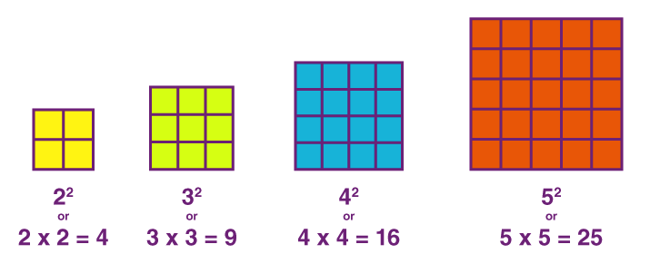
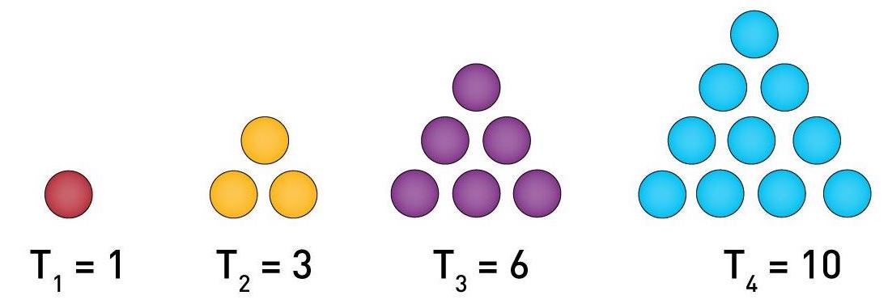

27 minutes
Loops
We’ve been building to this day for quite some time. Today is the day we learn about loops! If you haven’t heard about loops before, you’re in for a real treat; loops are an essential part of almost every programming language.
What is a loop?
Loops are ubiquitous in Python. Once you master loops, you’ll be amazed at how much more your programs can do. But first things first: What is a loop?
A loop is a sequence of one or multiple commands that are iterately executed until a particular condition is met.
Executing expressions iteratively is a key component of a litany of tasks such as training machine learning models, evaluating mathematical expressions, and sorting data. And by the time you’re done with this lesson, you’ll know just about everything you need to know to get started writing your own loops. In this lesson, we’ll see two flavors of loops: for loops and while loops. Both kinds of loops are integral not only to Python, but to many other programming langauges such as C++, MATLAB, and Java.
Why do we need loops? A motivating example
Before diving into the Python’s syntax for writing for and while loops, allow me to spend a few paragraphs motivating why loops are so integral in Python. Let’s say you want to print out the natural numbers between 1 and 5. Based on what we already know, we could use a list to store each of these numbers, and then print out that list, i.e.,
>>> numbers = [1, 2, 3, 4, 5]
>>> print(numbers)
[1, 2, 3, 4, 5]
But what if we wanted to print them out one by one? Recalling what we learned about indexing into a list in a previous lesson, we could write a script – let’s call it print_numbers.py – that would print out each number one by one.
numbers = [1, 2, 3, 4, 5]
print(numbers[0])
print(numbers[1])
print(numbers[2])
print(numbers[3])
print(numbers[4])
And here’s the ouput:
$ python print_numbers.py
1
2
3
4
5
While this certainly worked, I think that we can both agree that this is a bad solution. Here’s why:
-
Conciseness. Using this idea, we would need to write as many lines of code as there are items in
numbers. Ideally, we would like a much more concise solution. -
Flexibility. This code snippet would throw an error if
numberscontained fewer than five items, since there would not be an item at index 4. And ifnumberscontained more than five items, it would not print out all of the numbers in the list. Ideally, we’d like a solution that would work for a list of any size.
Resolving these shortcomings is at the heart of why lists are an indispensable part of Python. And now, we move on to the main event: for and while loops.
For loops
The first kind of loop that we’ll see in this lesson is the for loop.
A for loop iterates over a fixed sequence of items.
The word “sequence” mentioned in the definition is intentionally vague. As we’ll see in a later section in this lesson, for loops can iterate over all sorts of things, including some old favorites such as lists, strings, tuples, and a range of numbers. But that’s not all! For loops can also iterate over objects we haven’t yet seen, such as dictionaries, generators, and iterators.
Returning to our example in the previous section, the following script will accomplish our goal of printing out the numbers in numbers one by one while satisfying both the conciseness and flexibility criteria listed above.
numbers = [1, 2, 3, 4, 5]
for num in numbers:
print(num)
In the second line, the for keyword signals that we are writing a for loop. This line tells Python to iterate over the items – in this case, integers – in the numbers list. Then, in the indented block, we execute the command for each item in numbers.
Note that this is a slightly different use-case for the in keyword in Python. We previously saw the in keyword in our lesson on checking for inclusion in lists. The difference here is that rather than checking for inclusion, we are using in to look through each element of the list.
And finally, it’s worthing noting that there is nothing special about the variable name num here. We could have used any variable name, e.g.,
for any_variable_name in numbers:
print(any_variable_name)
And that’s really all there is to for loops. Next, let’s take a look at the while loop.
While loops
Next in our catalog of loops is the while loop.
A while loop iterates until a Boolean condition is satisfied.
In a previous lesson on conditionals, we learned that you only enter a conditional statement when the Boolean condition that defines it is satisfied. The same principle is at play with while loops, in the sense that you will only execute the contents of the loop if the Boolean condition is True.
As we did in the previous section, let’s illustrate the use of while loops with an example. In fact, let’s use the same number-printing example that we used for for loops. Here’s another solution which prints the numbers 1 through 5 to the console using a while loop.
num = 1
while num <= 5:
print(number)
num = num + 1
In the first line, we define a variable num = 1. Next, in the second line, we use the while keyword to signal to Python that we are writing a while loop. In this case, the Boolean condition in this line says that we should loop until num <= 5 is no longer True. And finally, in the body of the loop, we first print out num and then increment it by one.
Since the variable num is being incremented each time we pass through the loop, by the time we finish the fifth iteration, num will be equal to 6, and the Boolean condition num <= 5 will no longer be True. At this point, the loop will end.
And that’s pretty much that! Now you’ve seen both of the kinds of loops that you can write in Python. The time is ripe for a couple of exercises.
Exercise 1 (The first few Fibonacci numbers)
Let’s start things out with an easy exercise. Write a script called calc_fibonacci.py that will calculate the first $m$ Fibonacci numbers. If you’re not familiar with the Fibonacci numbers, here’s a brief primer.
The first two Fibonacci numbers are defined to be $F_0 = 0$ and $F_1 = 1$. Then, for any $m \geq 2$, $F_m$ is defined by the following recurrence relation:
$$F_m = F_{m-1} + F_{m-2}$$
So for instance, to calculate the third Fibonacci number $F_2$, we use the recurrence relationship to write $F_2 = F_1 + F_0$. And since $F_2 = 1 + 0 = 1$. The sequence of Fibonacci numbers $F_0, F_1, F_2, \dots$ are famous because they appear unexpectedly in various fields, including number theory, cominatorics, and algorithms.
Your program should take an integer $m$ as an input, and then use a loop (for or while?) to print out the first $m$ Fibonacci numbers one by one. For example:
$ python calc_fibonacci.py
Enter a number of terms (m >= 2): 6
The first m=6 Fibonacci numbers are:
0
1
1
2
3
5
When you’ve got it, have a look at the next exercise!
Exercise 2 (A guessing game. . . or, binary search)
Let’s play a game. I’m going to think of a number between 1 and 100. And your job is to guess my number in as few guesses as possible.
Stary by defining a script called my_number_game.py. To implement this game, you’ll need to define a variable called my_number and set it equal to a secret number between 1 and 100. Next, use a loop (for or while?) to prompt the user for guesses until they guess my_number. You should also give the user feedback about whether their guess was larger or smaller than my_number. And when they guess your number, print out a message telling them how many guesses it took them to get the right answer. Here’s some sample output:
$ python my_number_game.py
Enter your guess: 5
Nope! My number is larger than 5.
Enter your guess: 100
Uh uh! My number is smaller than 100.
Enter your guess: 2
Nope! My number is larger than 2.
Enter your guess: 72
Yes, that's right! My number was 72.
It took you 4 guess(es) to guess my number.
Try this out with your friends, and see who can get the best score! If you want to make this even fancier, why not discard invalid guesses, such as those smaller than 1 or larger than 100. You could also disregard repeated guesses, like so:
$ python my_number_game.py
Enter your guess: -6
Invalid guess! This number is smaller than 1.
Enter your guess: 103
Invalid guess! This number is smaller than 100.
Enter your guess: 5
Nope! My number is larger than 5.
Enter your guess: 5
Invalid guess! You already guessed 5.
Enter your guess: 72
Yes, that's right! My number was 72.
It took you 2 guess(es) to guess my number.
If you’re interested in what the optimal strategy is for this game, and what the smallest number of guesses you’d need to make to get the right answer, you may be interested to read more about the binary search algorithm.
Exercise 3 (Calculating mileage with while loops)
Imagine that you’re training for a running race, be it a 5k or a marathon. When training for such a race, it’s important to watch your mileage. On the one hand, if you ramp up your mileage too quickly, it’s easy to pick up an injury. One the other hand, if you increase your mileage too conservatively, you may not be able to finish the race. Let’s use Python to come up with a training plan that will see you safely through your training.
One basic rule of thumb to avoid injury is to increase your mileage by roughly 10% each week. For example, if you run 10 miles in your first week of training, you should run a maximum of 11 miles your second week, 12.1 miles your third week, and so on.
Your script – let’s call it training_plan.py – should take your current weekly mileage as input as well as the number of weeks that you want to train. It should then output how many miles you should run in each week, like so:
$ python training_plan.py
Your currently weekly mileage: 10
Weeks until your race: 6
Week 1: 11.0 miles
Week 2: 12.100000000000001 miles
Week 3: 13.310000000000002 miles
Week 4: 14.641000000000004 miles
Week 5: 16.105100000000004 miles
Week 6: 17.715610000000005 miles
Try implementing this using a loop (for or while?). And if you want to make it look prettier, you can print using Python’s f-string formatting:
print(f"Week {week}: {num_miles:.3f} miles")
Adding the :.3f after the num_miles variable name will tell Python to only print out three decimal places, which should yield output that looks like this:
$ python training_plan.py
Your currently weekly mileage: 10
Weeks until your race: 6
Week 1: 11.000 miles
Week 2: 12.100 miles
Week 3: 13.310 miles
Week 4: 14.641 miles
Week 5: 16.105 miles
Week 6: 17.716 miles
Are for loops and while loops. . . the same?
Something really interested happened in our presentation of for loops and while loops in the previous sections. Did you catch it?
Based on what you’ve seen so far, it would be reasonable to conclude that for and while loops apply in different circumstances: a for loop loops through a fixed sequence whereas a while loop loops until a Boolean condition is False. But in the example we used above where we printed out the numbers between 1 and 5, we were able to accomplish the task in two different ways; one way used a for loop, and the other used a while loop. As a reminder, here are the two versions we saw earlier:
# print numbers using a *for* loop
numbers = [1, 2, 3, 4, 5]
for num in numbers:
print(num)
# print numbers using a *while* loop
number = 1
while number <= 5:
print(number)
number = number + 1
This raises the following question: When can for loops and while loops be used to accomplish the same task?
To answer the question, I’m going to tentatively say that for and while loops are almost always exchangeable, meaning that any task that can be accomplished with a for loop can also be done with a while loop, and vice versa. There are people out there who I’m sure will balk at this answer and subsequently supply a convoluted counter example. However, my contention is that (a) such people have too much time on their hands and (b) in the vast majority of situations, for and while loops are exchangeable.
That being said, in some intances, it can be much cleaner and/or more concise to use one kind of loop instead of the other. And rather than running through some examples, why not explore this idea for yourself in the next exercise!
Exercise 4 (Exchanging loops)
It’s time for another game! I am going to write a program that uses a loop. If my code uses a for loop, your job is to rewrite that loop using a while loop, and vice versa.
Part (a): Triangular numbers. You’ve probably heard of square numbers, which also go by the name of perfect squares. Square numbers are integers that can be written as the square of an integer. So for example, 4 and 9 are square numbers because 4 is 2² and 9 is 3². From a geometric point of view, square numbers can be arranged in. . . squares, as shown below.

And while most people have heard of square numbers, have you every heard of triangular numbers? Triangular numbers are numbers that can be arranged in an equilateral triangle, like in the following picture:

To calculate a the $n^{\text{th}}$ triangular number, denoted by $T_n$, we can use the following formula:
$$T_n = \sum_{k=1}^n k = 1 + 2 + 3 + \dots + n$$
As shown in the picture, $T_1 = 1$, $T_2 = 3$, $T_3 = 6$, and so on. Now that we’re familiar with loops, let’s write a program to calculate the triangular numbers. Here’s my version:
n = int(input('Enter a number n (n >= 1): '))
T_n = 0
for number in range(1, n + 1):
T_n = T_n + number
print(f'The {n}^th triangular number T_{n} = {T_n}')
You job is to implement this using a while loop. Good luck!
Part (b): DNA sequencing. At the very end of the lesson lists, I mentioned that viewing strings as lists of characters can be useful in fields such as bioinformatics. I hope you didn’t think that I wasn’t going to follow up on this connection! In this lesson, we’ll perform a classic bioinformatics task: Searching for amino acids in a DNA sequence.
Here’s everything I know about DNA. Every strand of DNA can be viewed as a sequence of small segments called neucleotides. Each nucleotide is categorized by what’s known as a nucleotide base. There are four kinds of neucleotide bases in DNA segments: adenine (A), cytosine (C), guanine (G), and thymine (T). Thus, DNA sequences are often represented as strings containing these four letters. Here’s an example:
ACAAGATGCCATTGTCCCCCGGCCTCCTGCTGCTGCTGCTCTC
One of the most common tasks in bioinformatics is to search for particular three-letter subsequences (called codons) in a DNA sequence. There are 64 possible codons (why?); 61 of them encode amino acids, and the remaining three are used as stop signals. For example, the subsequence ACA encodes threonine and AGA encodes arginine.
Our job is to write a program that finds all the occurances of a given codon in a short snippet of DNA. Here’s a program that uses while loops to do just this.
seq = 'ACAAGATGCCATTGTCCCCCGGCCTCCTGCTGCTGCTGCTCTC' \
'CGGGGCCACGGCCACCGCTGCCCTGCCCCTGGAGGGTGGCCCC' \
'ACCGGCCGAGACAGCGAGCATATGCAGGAAGCGGCAGGAATAA' \
'GGAAAAGCAGCCTCCTGACTTTCCTCGCTTGGTGGTTTGAGTG' \
'GACCTCCCAGGCCAGTGCCGGGCCCCTCATAGGAGAGGAAGCT' \
'CGGGAGGTGGCCAGGCGGCAGGAAGGCGCACCCCCCCAGCAAT' \
'CCGCGCGCCGGGACAGAATGCCCTGCAGGAACTTCTTCTGGAA' \
'GACCTTCTCCTCCTGCAAATAAAACCTCACCCATGAATGCTCA' \
'CGCAAGTTTAATTACAGACCTGAA'
codon_to_find = input('Enter a valid codon: ')
found_codon_indices = []
seq_index = 0
while seq_index <= len(seq) - 3:
current_codon = seq[seq_index:seq_index+3]
if current_codon == codon_to_find:
found_codon_indices.append(seq_index)
seq_index = seq_index + 1
print(f'I found the codon {codon_to_find} at the following indices:')
print(found_codon_indices)
Your job is to implement this using a for loop. You’ve got this!
The perils of infinite looping
Let’s recap. In the previous sections, we learned that a for loop will iterate through each of the items in the sequence you supply. So if the first line of the loop looks something like for item in my_sequence:, the for loop will run for as many iterations as there are items in my_sequence. In contrast, a while loop iterates until the Boolean condition in it’s definition is no longer True. So if we have while loop defined by while my_condition == True:, the loop will continue to run until my_condition is False. This leads to the following question: What happens if my_condition is never False?
Great question! In that case, the while loop will iterate forever, and the program will never finish. For instance, the following script will never terminate.
while 1 == 1:
print("I'm still in the loop! Ahhhhhh!")
The output will be an never-ending number of print statements. Clearly, this behavior is to be avoided. So when writing while loops, it’s essential that we ensure that at some point, the loop will eventually terminate.
At some point in your programming career, you’ll fall into the trap of executing an infinite loop. So when this happens, don’t panic! There are two easy ways to get out of an infinite loop.
- Command-C. The easiest way is to hit ⌘-C (i.e., Command-C) on your keyboard. This is known as
KeyboardInterrupt, and it will kill the process that is currently running in your terminal. If you hit ⌘-C while the above program is running, you’ll get the following output.
...
I'm still in the loop! Ahhhhhh!
I'm still in the loop! Ahhhhhh!
I'm still in the loop! Ahhhhhh!
I'm still in the loop! Ahhhhhh!
I'm still in the loop! Ahhhhhh!
^CTraceback (most recent call last):
File "<stdin>", line 2, in <module>
KeyboardInterrupt
- Close your terminal. The next best way is to close your terminal, e.g., by clicking the red button in the top left-hand corner. This will also kill the current process, but you may want to avoid this option as it’s generally less convenient than using ⌘-C.
Now you know about to recognize and avoid infinite loops! You’re unstoppable!
Loops, indexing, and enumerate
In this section, I’ll briefly talk about another way to think about loops. Several sections ago, we saw our first for loop, which we used to print out the numbers between 1 and 5.
numbers = [1, 2, 3, 4, 5]
for num in numbers:
print(num)
Above, the variable num took on each of the integers from 1 to 5 as the loop iterated.
Here’s another way to look at it. Rather using a variable to take the place of each number in numbers, let’s keep track of an index that points to where we are in the list.
numbers = [1, 2, 3, 4, 5]
for index in range(len(numbers)):
print(numbers[index])
Rather than looping over numbers, we loop over a range object; in particular, we loop over range(len(numbers)). Recall that len(numbers) will tell us the length, or number of items, in the numbers list. And therefore range(len(numbers)) is the same as range(5), which in turn is the same as [0, 1, 2, 3, 4]. Given this, we can think of the code written above as being equivalent to the following:
numbers = [1, 2, 3, 4, 5]
for index in [0, 1, 2, 3, 4]:
print(numbers[index])
As the for loop iterates, index takes on the values 0 through 4. We then use the index variable to index into the numbers list, yielding the same result as we had in the original program.
Is this a better way of writing the program than our original version? I would argue that it’s not, because it’s arguably more intuitive to have a single variable which takes on each number, rather than an indexing variable which requires you to index into numbers via numbers[index] in the final line. For this reason, I’ll assert that we should prefer the first version of this program to the second. But that being said, this is a perfectly acceptable way of writing this script, and in languages like C++ and MATLAB, this is more-or-less the only way to write this script.
In some cases, you may need to keep track of the index in a list. For instance, in the part (b) of Exercise 4 (Exchanging loops), we needed to keep track of the indicies of the occurances of different codons in a DNA sequence. In this case, if can be rather useful to use the enumerate keyword in Python.
Here’s how enumerate works. Let’s say that you have a list of items called fruits, and that you would like to loop through them while keeping track f the index of each item in the list. The following script, which we’ll call fruits.py, will keep track of both the index and the items in the fruits list.
fruits = ['banana', 'orange', 'strawberry', 'pear']
for index, fruit in enumerate(fruits):
print(f'{fruit} is at index {index})
Here’s the output:
$ python fruits.py
banana is at index 0
orange is at index 1
strawberry is at index 2
pear is at index 3
From a stylistic point of view, if you need to access the index of the items of a sequence that you’re iterating over, it’s preferrable to use enumerate.
Breaking a loop
Let’s say you’re writing a loop in Python, and you want to exit it prematurely. If you’re writing a for loop, this would mean exiting a loop before you finish iterating through all of the items in the sequence that you’re looping over. And if you’re writing a while loop, this means exiting the loop while the Boolean condition is still True.
Why would you want to do this? Well, there could be a number of reasons. Perhaps you’re trying to find the index of the first occurrence of a particular item in a list. The following would be a reasonable way of implementing this.
item_to_find = 'c'
for index, item in enumerate(['a', 'b', 'c', 'd']):
if item == item_to_find:
print(f'I found {index_to_find} at index {index}')
break
Let’s look closely at what happened here. In this snippet, we loop through a list of letters. And if we find index_to_find in our list, we print out a message, and then on the next line, we write the word break. break will immediately exit the loop. You’ll run into this keyword from time to time when reading Python code, so it’s useful to be familiar with the syntax.
What can loops loop over?
Let’s do a bit of housekeeping before ending this lesson. This section will give you a summary of what we can loop over. In this section, I’ll focus on for loops. In the additional exercises
Lists. You’ve seen this already. Loops and lists go together like peas and carrots. For example, given any list, we can use the following script to loop through the list via:
for street in ["Chestnut", "Walnut", "Spruce", "Pine"]:
print(street)
Strings. Here’s another cool thing about lists: You can loop though the characters in a string. Have a look at the following script, which I’ll call loop_through_a_string.py, and the output it generates.
for character in "I ♥ you":
print(character)
$ python loop_though_a_string.py
I
♥
y
o
u
range and enumerate objects. Here’s another one you’ve already seen. You can loop though a range object just like you can a list. Thus, to print out the numnbers 1 through 5, you can do the following:
for number in range(1, 6):
print(number)
Similarly, you can also loop through an enumerate data type. See the following script – called enumerate.py – and it’s output.
for index, word in enumerate(['Not', 'all', 'those', 'who', 'wander', 'are', 'lost']):
print(f'Index: {index} | Word: {number}')
$ python enumerate.py
Index: 0 | Word: Not
Index: 1 | Word: all
Index: 2 | Word: those
Index: 3 | Word: who
Index: 4 | Word: wander
Index: 5 | Word: are
Index: 6 | Word: lost
Tuples. A few lessons ago, part of the bonus content was devoted to a discussion of tuples. Tuples are similar to lists, except the elements of a tuple cannot be changed or rearranged. You can loop through tuples in exactly the same was as you loop through lists.
for fruit in ('apples', 'bananas', 'oranges'):
print(fruit)
And so on. There are other things that you can loop over, including dictionaries, generators, and iterators. Dictionaries are fundamental to Python programming, and thus deserve their own future lesson. Generators and iterators are less common, and so we’ll be eliding over them in these notes.
Review
Let’s summarize what we’ve learned in this lesson.
-
What is a loop?. A loop is a sequence of one or multiple commands that are iterately executed until a particular condition is met.
-
For loops. A for loop iterates over a fixed sequence of items.
-
While loops. A while loop iterates until a Boolean condition is satisfied.
-
Are for loops and while loops. . . the same?. In most cases, for and while loops are exchangeable, in the sense that (nearly) any task that can be accomplished with a for loop can also be done with a while loop, and vice versa.
-
The perils of infinite looping. An infinite loop occurs when the Boolean condition in the definition of a while loop is never False. If you encounter an infinite loop, you can break it by hitting ⌘-C (i.e., Command-C) or by closing the terminal.
-
Loops, indexing, and
enumerate. Theenumeratekeyword can be used to obtain the items and indicies of items in a list. -
Breaking a loop. You can prematurely exit a loop by writing the
breakkeyword in the body of a loop. -
What can loops loop over?. Loops can iterate over all sorts of sequences in Python, including lists, strings,
rangeandenumerateobjects, tuples, and so much more.
Bonus content I: List comprehension
This section is about a concept in Python called list comprehension.
List comprehension is a shorter syntax for a creating a list based on a different list.
I use list comprehension quite a lot while programming in Python. It offers an elegant way to concisely create lists without losing readibility. I debated whether to include this topic in the main lesson, but on the whole, one can easily get by without knowing this topic. Thus, I put my foot down and relegated this topic to the bonus material.
As is our way, let’s start with an example. Let’s say that I want to generate a list of perfect squares, i.e., 1², 2², 3², and so on. One way to do this would be to loop through a range of numbers and append their squares to a list, like so:
perfect_squares = []
for num in range(1, 6):
perfect_squares.append(num ** 2)
print(perfect_squares)
And if we run this script, which we’ll call perfect_squares.py, we get the following result:
$ python perfect_squares.py
[1, 4, 9, 16, 25]
This is a perfectly acceptable way of getting the desired output. However, one could argue that this program is a little bit long and inelegant for such a simple task. Specifically, it takes three lines to create a list, initialize a loop, and then append the square numbers to the list. And as it turns out, list comprehension will allow us to accomplish this task in a single line of Python. Here’s how:
>>> perfect_squares = [num ** 2 for num in range(1, 6)]
>>> print(perfect_squares)
[1, 4, 9, 16, 25]
Look how concise this is! Here’s another example that uses the upper method; this capitalizes a string, i.e. 'abc'.upper() will return 'ABC'.
words = ['i', 'miss', 'you', 'bro']
# *without* list comprehension
caps_words_orig = []
for w in words:
caps_words_orig.append(w.upper())
# *with* list comprehension
caps_words_comprehension = [w.upper() for w in words]
Both caps_words_orig and caps_words_comprehension will contain ['I', 'MISS', 'YOU', 'BRO'].
As you might expect, list comprehension can get even more involved. The general syntax for list comprehension looks like this:
new_list = [expression for item in old_list if condition == True]
So far, we’ve created lists that look like [expression for item in old_list]. However, this general syntax means that we can include an additional conditional statement to filter entries in new_list.
Here’s an example. Let’s reuse our list of fruits from the section on Loops, indexing, and enumerate. However, let’s say that we want to remove all fruits that have an “g” in them. We could do this the old fashioned way:
fruits = ['banana', 'orange', 'strawberry', 'pear']
g_less_fruits = []
for fruit in fruits:
if 'g' not in fruit:
g_less_fruits.append(fruit)
However, given the general syntax for list comprehension, we can accomplish this in a single line of Python in the following way:
fruits = ['banana', 'orange', 'strawberry', 'pear']
g_less_fruits = [fruit for fruit in fruits if 'g' not in fruits]
It’s certainly more concise, but you may find this harder to read. For this reason, you have my permission to ignore list comprehension and to stick to the classic way of doing things.
Additional exercises
Exercise 5 (More practice with exchanging loops)
Let’s look back at the section on What can loops loop over?. In this section, we illustrated how for loops can be used to loop over different data types in Python. In this exercise, I want you to reimplement each of the loops in this section using while loops. If you get stuck, have a look back at the section titled Are for loops and while loops. . . the same? and Exercise 4 (Exchanging loops).
Exercise 6 (A cool approximation of a famous number: Part 1)
This exercise is all about $\pi$. Do you remember $\pi$? Maybe from geometry class in high school? If not, here’s what you need to know for the purpose of this exercise.
The number
$$ \pi = 3.14159265358979323846 \dots$$
is the ratio between the circumference of a circle and it’s diameter, and it has a long history of being very useful in math. Furthermore, $\pi$ is what’s known as an irrational number, meaning it cannot be written as a fraction like $\frac{1}{2}$ or $\frac{527}{23}$. For this reason, there are many (and I mean many) ways of approximating $\pi$ as a fraction.

In this exercise, we are going to try out one of the earliest known methods for approximating $\pi$ which dates back to the Middle Ages. This method says that we can approximate $\pi$ by adding up a bunch of fractions (yes, this is surprising!). Specifically, here’s the key equation:
$$\pi = 4 \left( \sum_{k=0}^\infty \frac{(-1)^k}{2k+1} \right) = 4 \left(1 - \frac{1}{3} + \frac{1}{5} - \frac{1}{7} + \frac{1}{9} - \dots\right)$$
Because we can’t add up an infinite number of terms, we’re going to use this formula to approximate $\pi$ by using what’s known as a partial sum. That is, we’re going to fix an integer number of terms $N\geq 0$, and then we’re going to approximate $\pi$ by computing
$$ \pi \approx 4 \left( \sum_{k=0}^N \frac{(-1)^k}{2k+1} \right) = 4 \left( 1 - \frac{1}{3} + \frac{1}{5} - \frac{1}{7} + \dots + \frac{(-1)^N}{2N+1} \right)$$
So for example, when $N=5$, this formula will yield the following approximation of $\pi$:
$$\pi \approx 4 \left(1 - \frac{1}{3} + \frac{1}{5} - \frac{1}{7} + \frac{1}{9} - \frac{1}{11} \right) = 2.9760461760461765 $$
The goal of this exercise is to see how “good” this approximation is. To do so, create a script called approximate_pi.py and use the partial sum approximation outlined above to compute an approximation for pi with $N$ terms, where $N$ is an input to the script. Your output should look something like this:
$ python approximate_pi.py
This program will approximate pi.
Enter a number N: 5
For N=5, the approximation of pi is: 2.9760461760461765
Exercise 7 (A cool approximation of a famous number: Part 2)
Here’s one way to take the previous exercise to the next level. Aside from just computing the approximation, we may be interested in seeing how close the approximation is to the true value of $\pi$. For instance, the error in the approximation for $N=5$ is
$$\text{error} = | 2.9760461760461765 - \pi| = 0.16554647754361662 $$
meaning that the difference between the approxiamtion and $\pi$ is about 0.166. Not bad, but certainly this approximation should get better as we add more terms.
To compute this error, we need the true value of $\pi$. Luckily, Python can give us access to this value. You can get access to this value by including the following line at the beginning of your script:
>>> from math import pi
>>> pi
3.141592653589793
Given this value, your next job is to update your script from the previous exercise to include the following output.
$ python approximate_pi.py
This program will approximate pi.
Enter a number N: 5
For N=5, the approximation of pi is: 2.9760461760461765
The error in your approximation is: 0.16554647754361662
Good luck!